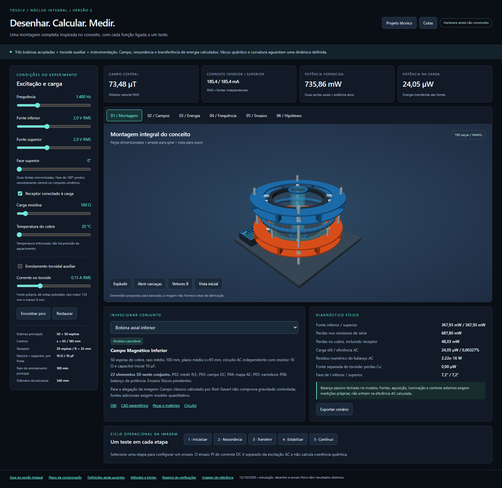

Entenda o circuito
Ajuste frequência, tensão, fase e carga. Observe campo, correntes e balanço de potência.
Uma bancada eletromagnética em 3D, com peças, medidas e cálculos que você pode inspecionar e comparar com um experimento.
Abre no navegador. Requer WebGL. Os cálculos e a importação de medições acontecem no seu dispositivo.

Cada parte do projeto tem arquivos e critérios de verificação próprios.
Ajuste frequência, tensão, fase e carga. Observe campo, correntes e balanço de potência.
Consulte desenhos cotados, malhas e lista de materiais antes de definir fabricação e eletrônica.
O CSV começa vazio. Registre dados reais, calibração e incerteza para avaliar as previsões.
O software já permite investigar o modelo. A confirmação física depende da bancada e dos instrumentos.
Consultar plano de desenvolvimento →Extraia o pacote inteiro e abra o index.html da versão escolhida para usar offline. V1 e V2 têm geometrias e circuitos diferentes.